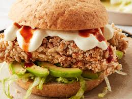

Chicken Sandwich

Description
The best chicken sandwich starts with the most tender chicken fillet, cooked in a hot skillet to get crispy, golden edges.
Add some crunchy toasted bread and some refreshing vegetables, Chicken Sandwich is an easy lunch recipe that will be a hit with your family!
Ingredients
- 50g wholemeal flour
- 200ml buttermilk (or 2 eggs, beaten)
- 150g puffed rice
- 2 tsp garlic powder
- 2 tsp onion powder or granules
- 4 tsp paprika
- 1 tsp dried sage
- 8 mini chicken breast fillets
- 4 wholemeal buns
- 1 ripe avocado, peeled, stoned and sliced
- 1/2 iceberg lettuce, shredded
- Sea salt and freshly ground black pepper
- Mexican hot sauce such as Cholula
Steps
- Preheat the oven to 180 degrees Celsius.
- Put the flour, buttermilk, and puffed rice into three shallow bowls. Season the flour.
- Dip a piece of chicken into the flour so that it is completely covered. Remove and shake any excess.
- Put the tray into the preheated oven and bake for 25-30 minutes, until golden and cooked through.
- Slice open the buns and divide the avocado slices between them. Top with shredded iceberg lettuce.
- Once the chicken is cooked, place on top of the lettuce and drizzle the hot sauce, if desired. Close the buns and serve immediately.